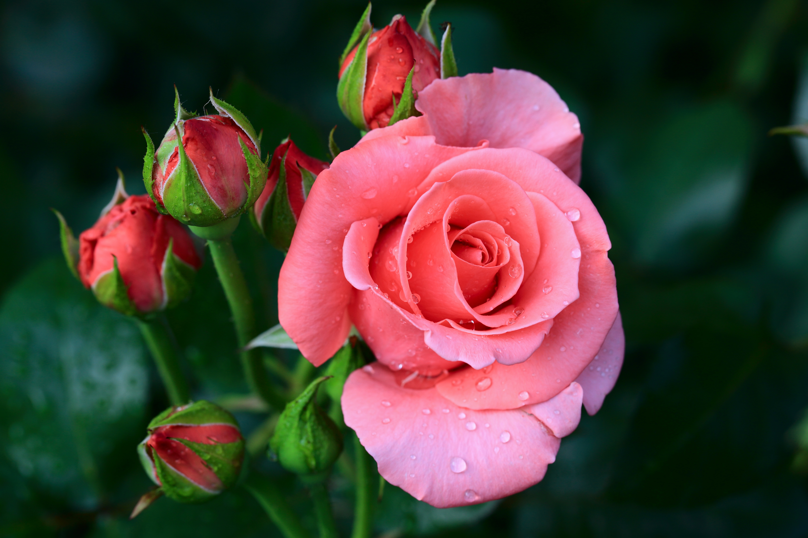
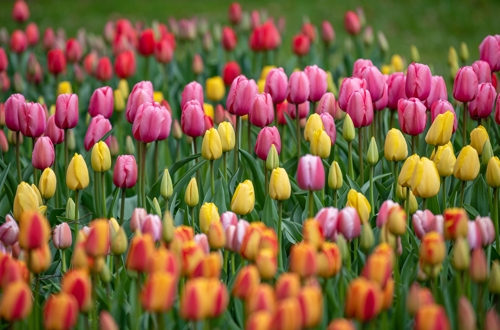
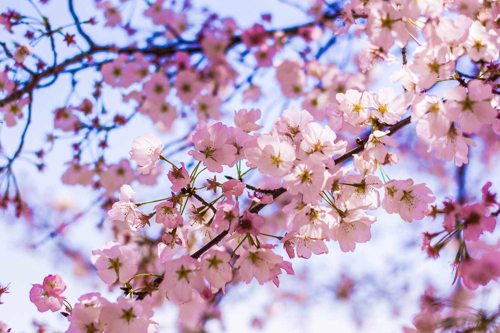
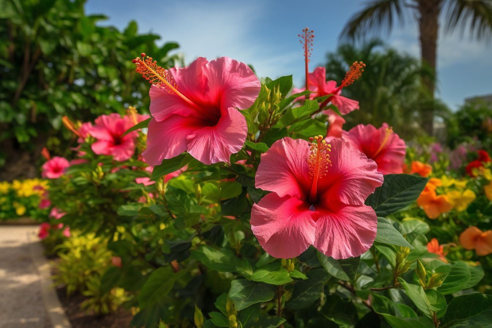
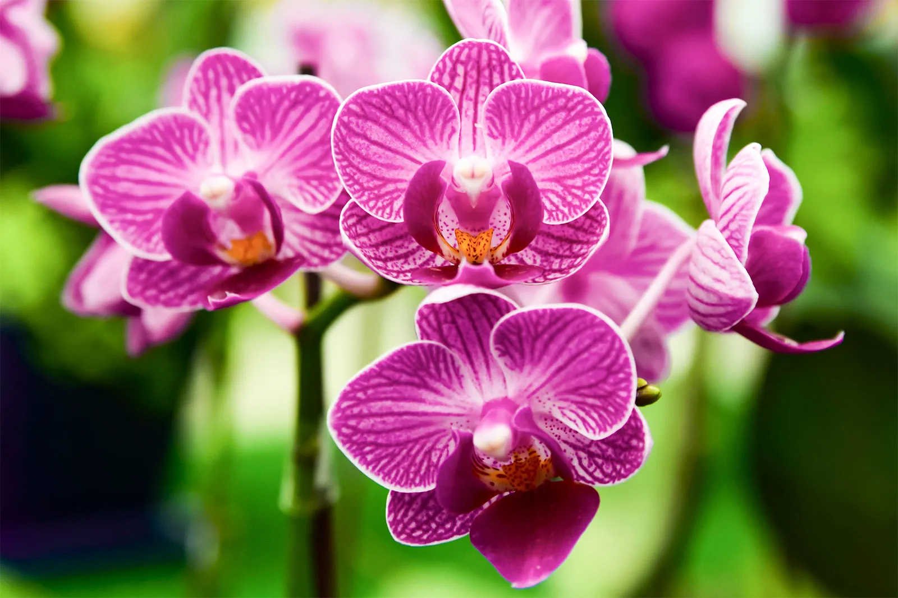
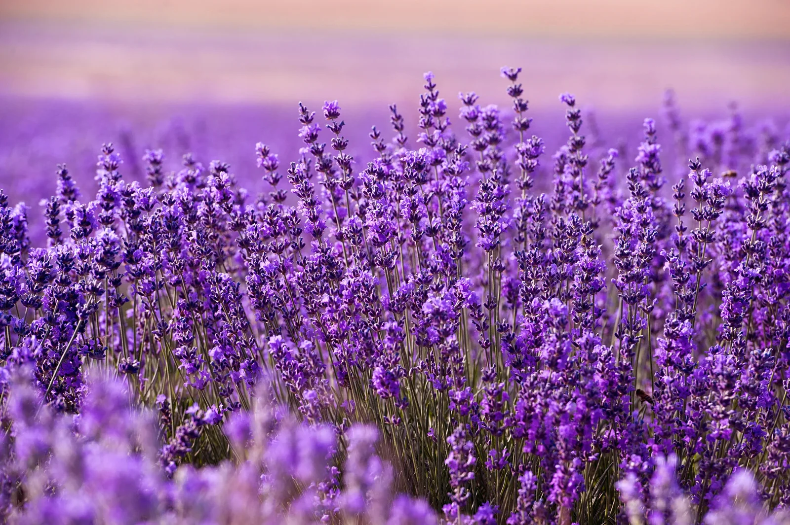
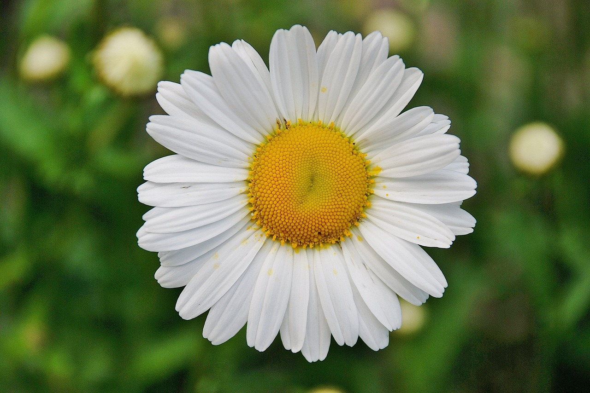

Prodict Highlights
- Lightweight Upper Materials
- Breathable Mesh Design
- Cushioned Sole Support
- Available in Multiple Colors
Premium Footwear Presentation
Explore our latest shoe showcase featuring clean layout product highlights, and modern CSS styling techniques.
View CollectionThis uses Internal CSS from the <style< block.
This box is styled in the HTML file using internal CSS, while the rest of the page is styled using the external stylesheet.
| Size | Length (cm) | Fit |
|---|---|---|
| 7 | 25.0 | Snug |
| 8 | 26.0 | Regular |
| 9 | 27.0 | Roomy |
Visit Our Official Store or Check our New Arrivals
😱 Designed for Style and Performance.
This Sentence uses inline CSS to demonstrate direct stylinf inside the HTML Body.

A popular flowering plant known for its beautiful petals and sweet fragrance. Roses come in many colors, including red, pink, white, and yellow.

A colorful spring flower with a cup-shaped bloom. Tulips come in many bright colors and are commonly associated with beauty and springtime.
A tall flower with bright yellow petals surrounding a dark center. Sunflowers are known for their large blooms and their tendency to face toward sunlight.

A delicate pink or white flower that blooms on cherry trees. Cherry blossoms are especially famous for their beautiful spring displays in Japan.

A tropical flower with large, colorful petals and a prominent center. Hibiscus flowers are commonly found in warm climates and are often used as ornamental plants.

An elegant flower known for its unusual shapes and wide variety of colors. Orchids are popular ornamental plants and can be found in many tropical regions.

A fragrant plant with small purple flowers growing along tall stems. Lavender is well known for its pleasant scent and is often used in perfumes and aromatherapy.

A small, cheerful flower with white petals surrounding a yellow center. Daisies are commonly found in grasslands and gardens.